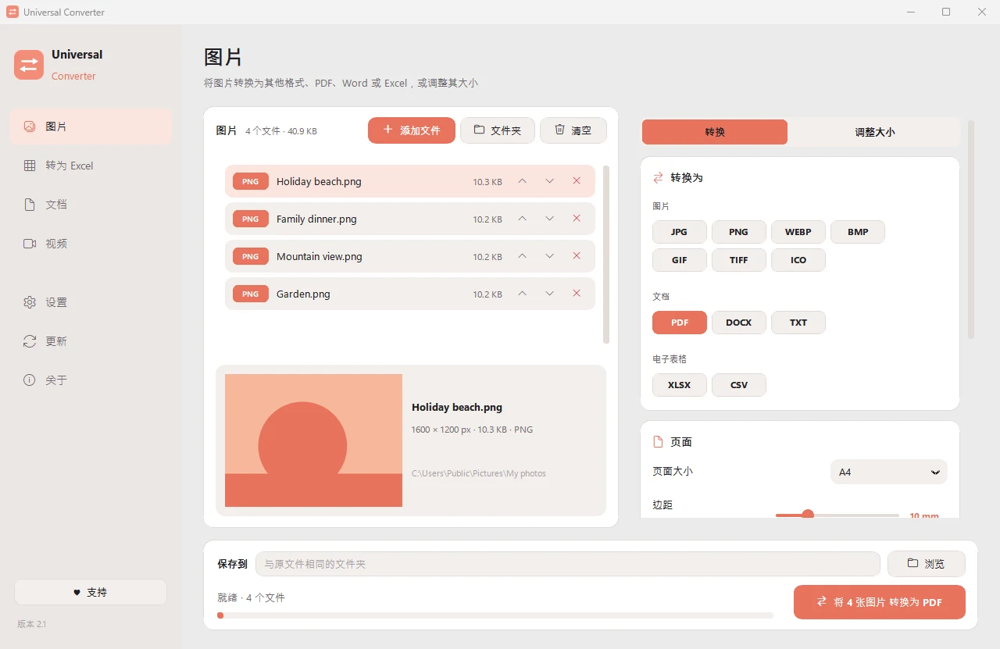

调整图片尺寸或压缩到指定文件大小
表格和邮件常常限制附件大小。Universal Converter 可以把每张图片缩小到你设定的大小以内，或调整到精确的像素。
操作步骤
- 打开 Universal Converter，在左侧选择图片。
- 把文件或整个文件夹拖入窗口，或点击“添加文件”。
- 在顶部切换到“调整大小”，然后选择像素、百分比或文件大小。
- 点击“转换”。新文件会保存在原文件旁边，或保存到你选择的文件夹。

为什么离线处理？
Universal Converter 在你自己的电脑上完成工作。文件保持私密，大文件也没问题，而且不联网也能用。